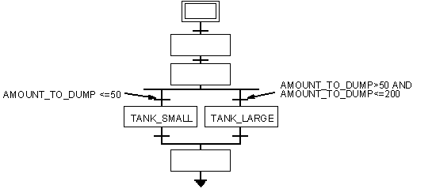

Or sequence selections
An Or sequence selection defines the logic for a decision you want a recipe to make. The result of the decision determines the path that the recipe executes.
For example, suppose an operation can select from two holding tanks. One tank holds up to 50 pounds of material. The other holds up to 200 pounds. Depending on the amount of material processed, you want the operation to select the appropriate size tank.
Using an Or sequence selection lets you set up the logic in the operation so that it can evaluate the amount of material processed. This is done by creating a Boolean condition for each transition preceding the step that transfers the material to a specific holding tank.

Using this chart, the operation can evaluate the amount of material it has to transfer to a holding tank. If the amount is less than or equal to 50 pounds, the TANK_SMALL step runs and transfers the processed material to the smaller tank. If the amount is between 50 and 200 pounds, the TANK_LARGE step runs and transfers the material to the larger tank.
Or Sequence Selection Requirements
The Or sequence selection requires that only one of its conditions can be true at any time. As a result, each condition must be mutually exclusive. For example, using the recipe in the preceding figure, you would not want to change the second condition to the following:
AMOUNT_TO_DUMP>=30 AND AMOUNT_TO_DUMP<=200
Using this condition, if the amount of material processed is greater than 30 and less than or equal to 50, both conditions would be true. This causes one of the transitions to execute. The exact transition that executes depends on which one evaluates to TRUE first.
When configuring divergence OR sequence selections, do not configure any TRUE transition conditions as it causes that transition to always execute; effectively rendering the other transition conditions obsolete.
You can create two types of Or sequence selections: a divergence and a convergence. A divergent Or connects one step to two transitions. A convergent Or connects two transitions to one step.
Create all branching and looping after the second step. This allows the recipe to be put into manual mode before the loop or branch begins, permitting an Active Step Change. With an Active Step Change, you must put the step preceding the one you want to control into manual mode. Since the first step in a recipe is a placeholder, it cannot be put into manual mode. If the second step is where the loop or branch begins, you can never perform an Active Step Change on that loop or branch. Therefore, begin the loop or branch at the third step. The second step can then be put into manual mode when needed for control of the anteceding step.